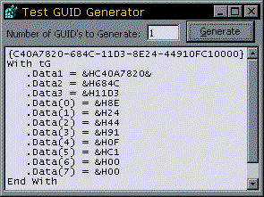

VB5 GUID Generator (14K)
VB5 GUID Generator (14K)
 VB6 GUID Generator (12K)
VB6 GUID Generator (12K)
 15 Nov 1999
15 Nov 1999
First Posted

Create New GUIDs
Create CLSIDs for Type Libraries or Unique Numbers across independent machines
This sample, from Dion Wiggins (dionwiggins@hotmail.com) shows how to use the CoCreateGuid and StringFromGUID2 functions to create a GUID.
The code is compiled into an ActiveX DLL which gives the interesting possibility of using the code from an ASP page, or from other ActiveX-enabled scripting tools.
A Little About GUIDs
A GUID, or Globally Unique Identifier is a 128bit number (thus potentially allowing for a maximum of 2128 possible values, which is an undescribably large number). The idea of a GUID is that no two machines can ever generate the same GUID value twice. This is achieved by using a combination of the current time, your machine's Media Access Control (MAC) address (a unique number built into all network cards) if it has one, and other routines.
To make it easier to write a GUID, it is normally expressed as a hexadecimal number with some formatting applied. This form of a GUID is also referred to as a CLSID when it is used as the identification number of an OLE object. An example CLSID looks like this (this is the CLSID for the Microsoft Common Dialog control shipped with Service Pack 2 of VB5):
{F9043C85-F6F2-101A-A3C9-08002B2F49FB}
The formatting shown corresponds mostly to the COM GUID type; the only difference being that the type combines the last two fields into a single array of bytes rather than 2 bytes followed by 6:
Type GUID
Data1 As Long
Data2 As Integer
Data3 As Integer
Data4(0 To 7) As Byte
End Type
Whilst GUIDs are essential for the correct identification of COM components, they also have wide range number of other uses, for example, generating unique numbers on independent machines, and creating unique identifiers which are difficult to forge.
Creating a GUID
Creating a GUID and converting it to the string representation is simple, and just requires a couple of OLE32.DLL calls:
Private Type GUID Data1 As Long Data2 As Long Data3 As Long Data4(8) As Byte End Type Private Declare Function CoCreateGuid Lib "ole32.dll" ( _ pguid As GUID) As Long Private Declare Function StringFromGUID2 Lib "ole32.dll" ( _ rguid As Any, _ ByVal lpstrClsId As Long, _ ByVal cbMax As Long) As Long
To create a GUID, just call CoCreateGuid:
Dim tG as GUID CoCreateGuid tG
To convert the GUID into the string CLSID, use StringFromGUID2. Note that the returned string is Unicode so you need to allocate a suitable buffer for the result before passing it into the call:
Dim b() As Byte Dim lSize As Long Dim sCLSID As String Dim lR As Long lSize = 40 ReDim b(0 To (lSize * 2) - 1) As Byte lR = StringFromGUID2(tG, VarPtr(b(0)), lSize) sCLSID = Left$(b, lR - 1)